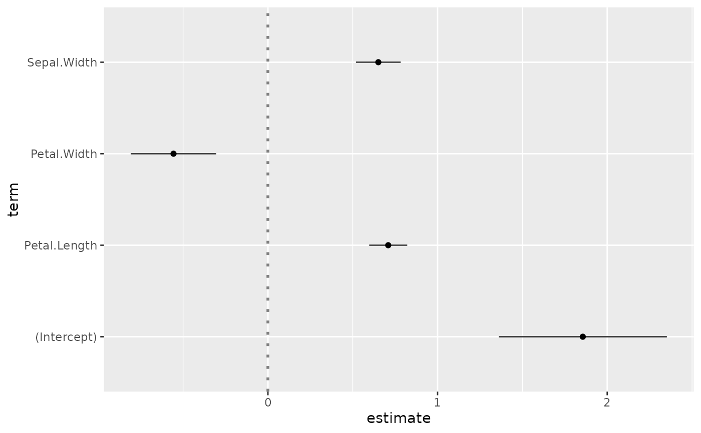
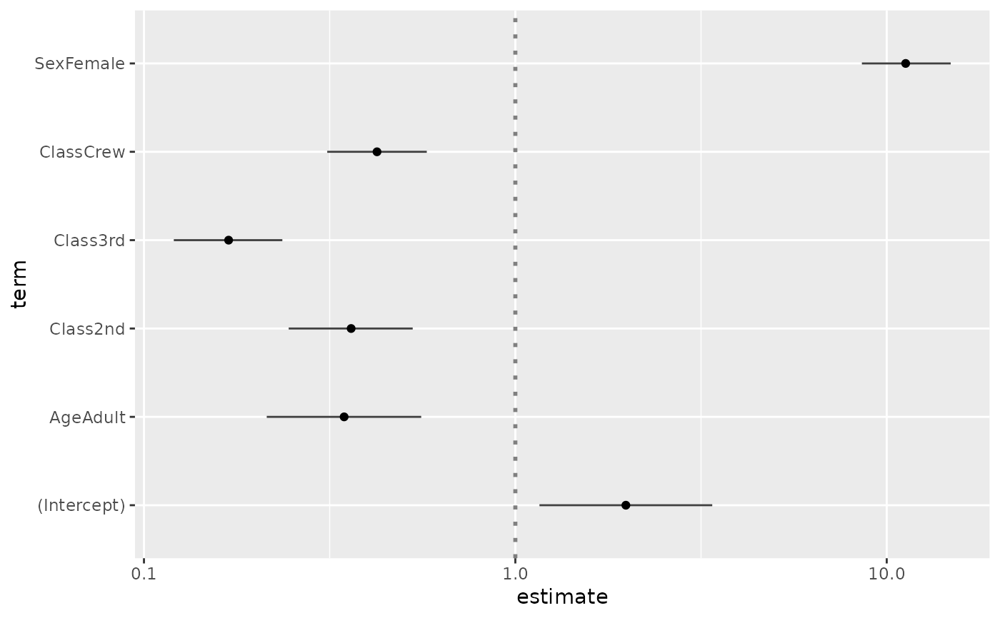
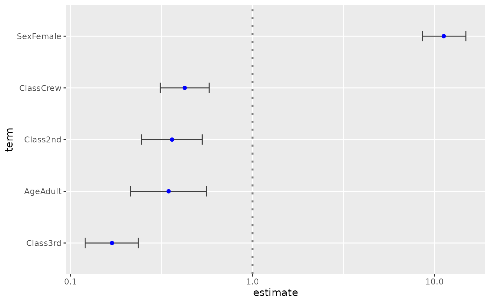

Plot the coefficients of a model with broom and ggplot2.
For an updated and improved version, see ggcoef_model().
ggcoef(
x,
mapping = aes(!!as.name("estimate"), !!as.name("term")),
conf.int = TRUE,
conf.level = 0.95,
exponentiate = FALSE,
exclude_intercept = FALSE,
vline = TRUE,
vline_intercept = "auto",
vline_color = "gray50",
vline_linetype = "dotted",
vline_size = 1,
errorbar_color = "gray25",
errorbar_height = 0,
errorbar_linetype = "solid",
errorbar_size = 0.5,
sort = c("none", "ascending", "descending"),
...
)a model object to be tidied with broom::tidy() or a data frame (see Details)
default aesthetic mapping
display confidence intervals as error bars?
level of confidence intervals (passed to broom::tidy()
if x is not a data frame)
if TRUE, x-axis will be logarithmic (also passed to broom::tidy()
if x is not a data frame)
should the intercept be excluded from the plot?
print a vertical line?
xintercept for the vertical line.
"auto" for x = 0 (or x = 1 if exponentiate is TRUE)
color of the vertical line
line type of the vertical line
size of the vertical line
color of the error bars
height of the error bars
line type of the error bars
size of the error bars
"none" (default) do not sort, "ascending" sort by increasing coefficient value, or "descending" sort by decreasing coefficient value
additional arguments sent to ggplot2::geom_point()
# Small function to display plots only if it's interactive
p_ <- GGally::print_if_interactive
library(broom)
reg <- lm(Sepal.Length ~ Sepal.Width + Petal.Length + Petal.Width, data = iris)
p_(ggcoef(reg))

# \donttest{
d <- as.data.frame(Titanic)
reg2 <- glm(Survived ~ Sex + Age + Class, family = binomial, data = d, weights = d$Freq)
ggcoef(reg2, exponentiate = TRUE)

ggcoef(
reg2,
exponentiate = TRUE, exclude_intercept = TRUE,
errorbar_height = .2, color = "blue", sort = "ascending"
)

# }